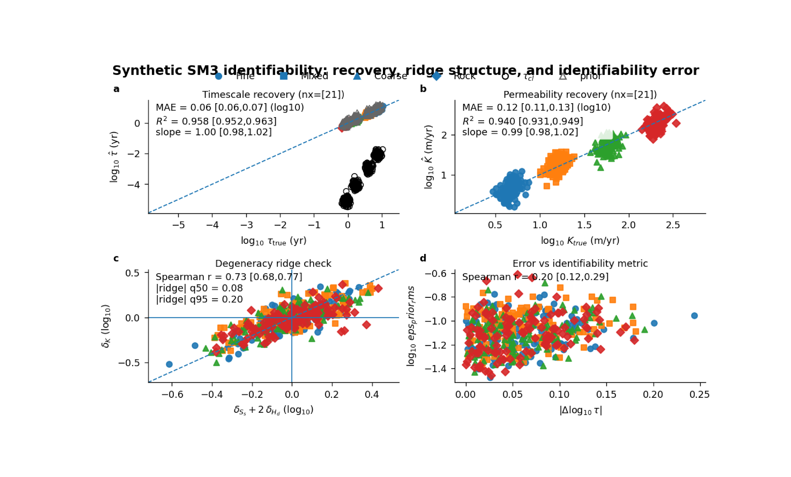

Note
Go to the end to download the full example code.
SM3 identifiability: learning when recovery is accurate and when parameters slide along a ridge#
This example teaches you how to read the GeoPrior SM3 identifiability figure.
This page is different from the city-scale map figures. Here we are not asking:
where the model predicts large subsidence,
or which district looks riskier.
Instead, we are asking a more fundamental scientific question:
When the synthetic physics is known, can the model recover the effective parameters in a uniquely interpretable way, or do some parameters slide along a degeneracy ridge?
That is exactly what the SM3 identifiability figure is designed to show.
What the four panels mean#
The plotting backend builds four panels:
timescale recovery \(\log_{10}( au_{true})\) versus \(\log_{10}(\hat{ au})\), with optional overlays for the closure-implied :math:` au_{cl}` and the prior timescale.
permeability recovery either direct \(\log_{10}(K_{true})\) versus \(\log_{10}(\hat{K})\), or closure-implied \(\log_{10}(K_{true})\) versus \(\log_{10}(K_{cl}(\hat{ au}))\).
degeneracy ridge check \(\delta_K\) versus \(\delta_{S_s} + 2\delta_{H_d}\).
error versus identifiability metric \(|\Delta \log_{10} au|\) versus one chosen diagnostic such as
ridge_resid,eps_prior_rms, orclosure_consistency_rms.
Why this matters#
In poroelastic closures, several parameter combinations can produce very similar behaviour. That means a model may look good on one target while still being only weakly identifiable.
This figure helps the reader separate two ideas that are often confused:
recovery quality: did we estimate the right effective value?
identifiability quality: did we estimate it for a stable, interpretable reason rather than by sliding along a trade-off ridge?
This gallery page builds a synthetic SM3-style table so the example is fully executable during the docs build.
Imports#
We use the real plotting backend from the project script. So this gallery page teaches the actual figure generator, not a separate demo implementation.
from __future__ import annotations
import json
import tempfile
from pathlib import Path
import matplotlib.image as mpimg
import matplotlib.pyplot as plt
import numpy as np
import pandas as pd
from geoprior._scripts.plot_sm3_identifiability import (
plot_sm3_identifiability,
)
Step 1 - Define the synthetic lithology groups#
The real SM3 figure colors points by lith_idx and uses a
different marker for each lithology group.
We therefore create four lithology families:
Fine
Mixed
Coarse
Rock
Each family gets a characteristic effective parameter scale.
This is not meant to be a perfect physical truth model. It is meant to create a synthetic table that behaves like a useful identifiability experiment.
SEC_PER_YEAR = 365.25 * 24.0 * 3600.0
rng = np.random.default_rng(42)
lith_cfg = {
0: {
"name": "Fine",
"tau_year": 7.5,
"K_mps": 1.5e-7,
"Ss": 6.0e-4,
"Hd_m": 26.0,
},
1: {
"name": "Mixed",
"tau_year": 4.0,
"K_mps": 5.0e-7,
"Ss": 3.5e-4,
"Hd_m": 22.0,
},
2: {
"name": "Coarse",
"tau_year": 1.7,
"K_mps": 1.8e-6,
"Ss": 1.6e-4,
"Hd_m": 18.0,
},
3: {
"name": "Rock",
"tau_year": 0.9,
"K_mps": 6.5e-6,
"Ss": 7.5e-5,
"Hd_m": 14.0,
},
}
n_per_lith = 120
Step 2 - Build a synthetic SM3 results table#
The real plotting function requires a very specific table structure. Its base columns include:
true / prior / estimated tau
true / prior / estimated K
true / prior / estimated Ss
true / prior / estimated Hd
the log-offset summaries relative to the true values
eps_prior_rms
closure_consistency_rms
The key teaching idea here is the latent ridge variable u.
When u changes:
- K is pushed one way,
- Ss and Hd can partly compensate,
- and the system can still look “acceptable” unless we inspect
the ridge structure explicitly.
That is exactly the kind of ambiguity panel (c) is meant to expose.
rows: list[dict[str, float | int | str]] = []
for lith_idx, cfg0 in lith_cfg.items():
for _ in range(n_per_lith):
tau_true_year = cfg0["tau_year"] * (
10.0 ** rng.normal(0.0, 0.05)
)
K_true_mps = cfg0["K_mps"] * (
10.0 ** rng.normal(0.0, 0.07)
)
Ss_true = cfg0["Ss"] * (
10.0 ** rng.normal(0.0, 0.05)
)
Hd_true = cfg0["Hd_m"] * (
10.0 ** rng.normal(0.0, 0.04)
)
# Lithology-based priors are deliberately broader and
# slightly biased relative to the truth.
tau_prior_year = tau_true_year * (
10.0 ** rng.normal(0.08, 0.10)
)
K_prior_mps = K_true_mps * (
10.0 ** rng.normal(-0.05, 0.16)
)
Ss_prior = Ss_true * (
10.0 ** rng.normal(0.04, 0.14)
)
Hd_prior = Hd_true * (
10.0 ** rng.normal(0.03, 0.10)
)
# Latent ridge direction.
u = rng.normal(0.0, 0.22)
# A small orthogonal estimation error for tau.
e_tau = rng.normal(0.0, 0.07)
tau_est_year = tau_true_year * (
10.0 ** (0.10 * u + e_tau)
)
# Three coordinated offsets that create a ridge-like
# trade-off structure.
delta_K_log10 = 0.68 * u + rng.normal(0.0, 0.06)
delta_Ss_log10 = 0.36 * u + rng.normal(0.0, 0.05)
delta_Hd_log10 = 0.16 * u + rng.normal(0.0, 0.04)
K_est_mps = K_true_mps * (10.0 ** delta_K_log10)
Ss_est = Ss_true * (10.0 ** delta_Ss_log10)
Hd_est = Hd_true * (10.0 ** delta_Hd_log10)
ridge_resid_log10 = (
delta_K_log10
- (delta_Ss_log10 + 2.0 * delta_Hd_log10)
)
# Positive diagnostics used in panel (d).
eps_prior_rms = (
0.03
+ 0.45 * abs(ridge_resid_log10)
+ 0.18 * abs(e_tau)
+ rng.uniform(0.0, 0.01)
)
closure_consistency_rms = (
0.025
+ 0.35 * abs(ridge_resid_log10)
+ 0.24 * abs(e_tau)
+ rng.uniform(0.0, 0.01)
)
rows.append(
{
"identify": "both",
"nx": 21,
"lith_idx": int(lith_idx),
"kappa_b": 1.0,
"tau_true_year": float(tau_true_year),
"tau_prior_year": float(tau_prior_year),
"tau_est_med_year": float(tau_est_year),
"tau_true_sec": float(
tau_true_year * SEC_PER_YEAR
),
"tau_prior_sec": float(
tau_prior_year * SEC_PER_YEAR
),
"tau_est_med_sec": float(
tau_est_year * SEC_PER_YEAR
),
"K_true_mps": float(K_true_mps),
"K_prior_mps": float(K_prior_mps),
"K_est_med_mps": float(K_est_mps),
"K_est_med_m_per_year": float(
K_est_mps * SEC_PER_YEAR
),
"Ss_true": float(Ss_true),
"Ss_prior": float(Ss_prior),
"Ss_est_med": float(Ss_est),
"Hd_true": float(Hd_true),
"Hd_prior": float(Hd_prior),
"Hd_est_med": float(Hd_est),
# Important: the real script divides these by ln(10),
# so we store natural-log offsets here.
"vs_true_delta_K_q50": float(
np.log(K_est_mps / K_true_mps)
),
"vs_true_delta_Ss_q50": float(
np.log(Ss_est / Ss_true)
),
"vs_true_delta_Hd_q50": float(
np.log(Hd_est / Hd_true)
),
"eps_prior_rms": float(eps_prior_rms),
"closure_consistency_rms": float(
closure_consistency_rms
),
}
)
df = pd.DataFrame(rows)
print("Synthetic SM3 table")
print(df.head().to_string(index=False))
Synthetic SM3 table
identify nx lith_idx kappa_b tau_true_year tau_prior_year tau_est_med_year tau_true_sec tau_prior_sec tau_est_med_sec K_true_mps K_prior_mps K_est_med_mps K_est_med_m_per_year Ss_true Ss_prior Ss_est_med Hd_true Hd_prior Hd_est_med vs_true_delta_K_q50 vs_true_delta_Ss_q50 vs_true_delta_Hd_q50 eps_prior_rms closure_consistency_rms
both 21 0 1.0 7.767784 5.959277 6.764168 2.451326e+08 1.880605e+08 2.134609e+08 1.268506e-07 6.997512e-08 1.424108e-07 4.494142 0.000654 0.000747 0.000713 28.352799 28.246958 28.486938 0.115706 0.086483 0.004720 0.052842 0.046772
both 21 0 1.0 6.793548 8.074285 6.290918 2.143881e+08 2.548050e+08 1.985263e+08 1.591856e-07 1.325336e-07 1.437667e-07 4.536931 0.000537 0.000473 0.000555 28.191057 40.028148 28.793183 -0.101879 0.033104 0.021134 0.071580 0.065969
both 21 0 1.0 9.597180 13.296630 10.222251 3.028640e+08 4.196097e+08 3.225897e+08 1.404890e-07 1.897919e-07 1.171912e-07 3.698274 0.000566 0.000598 0.000518 24.122507 21.301333 21.221707 -0.181322 -0.087823 -0.128121 0.078050 0.064542
both 21 0 1.0 7.691228 9.391903 7.015148 2.427167e+08 2.963859e+08 2.213812e+08 1.726201e-07 1.711395e-07 1.415584e-07 4.467245 0.000616 0.000827 0.000563 27.677693 21.203830 30.951031 -0.198380 -0.089974 0.111780 0.107488 0.088073
both 21 0 1.0 6.178994 8.750652 6.257516 1.949942e+08 2.761496e+08 1.974722e+08 1.421181e-07 1.696621e-07 1.601258e-07 5.053186 0.000611 0.000599 0.000627 27.442410 26.435472 27.029929 0.119302 0.025990 -0.015145 0.059380 0.049938
Step 3 - Read the key synthetic signals before plotting#
A good teaching page should show the logic before the figure.
Here we compute two helpful summaries:
the median ridge residual by lithology,
the median tau recovery error by lithology.
These are not required by the plotting function itself, but they help the reader understand what the figure is about.
ridge_log10 = (
df["vs_true_delta_K_q50"].to_numpy() / np.log(10.0)
- (
df["vs_true_delta_Ss_q50"].to_numpy() / np.log(10.0)
+ 2.0 * df["vs_true_delta_Hd_q50"].to_numpy() / np.log(10.0)
)
)
tau_err_log10 = np.abs(
np.log10(df["tau_est_med_year"].to_numpy())
- np.log10(df["tau_true_year"].to_numpy())
)
summary_rows = []
for lith_idx, sub in df.groupby("lith_idx", sort=True):
mask = df["lith_idx"].eq(lith_idx).to_numpy()
summary_rows.append(
{
"lith_idx": int(lith_idx),
"median_|ridge|_log10": float(
np.median(np.abs(ridge_log10[mask]))
),
"median_|dlog10_tau|": float(
np.median(tau_err_log10[mask])
),
}
)
summary_df = pd.DataFrame(summary_rows)
print("")
print("Lithology summaries")
print(summary_df.to_string(index=False))
Lithology summaries
lith_idx median_|ridge|_log10 median_|dlog10_tau|
0 0.070049 0.052018
1 0.091365 0.053392
2 0.071659 0.049870
3 0.074145 0.051718
Step 4 - Render the real SM3 identifiability figure#
We call the actual plotting backend.
A few choices are worth explaining:
tau_units="year"is friendlier for the first lesson,metric="eps_prior_rms"makes panel (d) different from panel (c), so the page teaches two kinds of identifiability evidence rather than repeating the same one,k_from_tau=Falsekeeps panel (b) as direct permeability recovery,show_tau_cl=Trueandshow_prior=Truemake panel (a) richer and more instructive,n_bootis reduced from the paper default so the docs build stays lightweight.
tmp_dir = Path(
tempfile.mkdtemp(prefix="gp_sg_sm3_ident_")
)
fig_out = tmp_dir / "sm3_identifiability_gallery"
csv_out = tmp_dir / "sm3_identifiability_summary.csv"
json_out = tmp_dir / "sm3_identifiability_summary.json"
plot_sm3_identifiability(
df,
tau_units="year",
metric="eps_prior_rms",
k_from_tau=False,
k_cl_source="prior",
show_prior=True,
show_tau_cl=True,
show_legend=True,
show_labels=True,
show_ticklabels=True,
show_panel_titles=True,
show_title=True,
title=(
"Synthetic SM3 identifiability: recovery, ridge "
"structure, and identifiability error"
),
show_stats=True,
show_ci=True,
n_boot=300,
ci=0.95,
boot_seed=7,
out=str(fig_out),
out_csv=str(csv_out),
out_json=str(json_out),
dpi=160,
)
[OK] wrote C:\Users\Daniel\AppData\Local\Temp\gp_sg_sm3_ident_j1v299e_\sm3_identifiability_gallery (eps,pdf,png,svg)
Step 5 - Show the actual saved figure in the gallery page#
The plotting backend saves the figure and summary files, then closes the figure. We reload the PNG so Sphinx-Gallery shows the real result produced by the project code.
img = mpimg.imread(str(fig_out) + ".png")
fig, ax = plt.subplots(figsize=(8.6, 5.2))
ax.imshow(img)
ax.axis("off")

(np.float64(-0.5), np.float64(1143.5), np.float64(664.5), np.float64(-0.5))
Step 6 - Read the summary table produced by the script#
The real script writes a compact summary CSV and JSON. This is useful because the figure is not just visual: it also exports auditable statistics.
stats_df = pd.read_csv(csv_out)
print("")
print("Summary statistics written by the plotting backend")
print(stats_df.to_string(index=False))
with open(json_out, "r", encoding="utf-8") as f:
payload = json.load(f)
print("")
print("JSON meta block")
print(json.dumps(payload["meta"], indent=2))
Summary statistics written by the plotting backend
name estimate ci_lo ci_hi nd
tau_mae_log10 0.061075 0.057285 0.065647 2
tau_r2 0.957914 0.951665 0.962937 3
tau_slope 0.999476 0.984023 1.020388 2
K_mae_log10 0.121329 0.113029 0.129747 2
K_r2 0.940453 0.931490 0.948685 3
K_slope 0.994805 0.975019 1.015456 2
ridge_spearman 0.727616 0.680312 0.769215 2
err_vs_metric_spearman 0.202692 0.117757 0.290081 2
JSON meta block
{
"boot_seed": 7,
"ci": 0.95,
"k_cl_source": "prior",
"k_from_tau": false,
"metric": "eps_prior_rms",
"n_boot": 300,
"n_rows": 480,
"ridge_q50": 0.07668299297833492,
"ridge_q95": 0.20492275662679227,
"tau_units": "year"
}
Step 7 - Learn how to read panel (a)#
Panel (a) is the timescale recovery panel.
The dashed diagonal is the ideal line:
estimated tau = true tau
Points near that line mean the effective relaxation time has been recovered well.
Two optional overlays make the panel more informative:
the open circles show tau_cl, the closure-implied timescale computed from the estimated fields,
the open triangles show the prior timescale.
This means panel (a) is teaching three ideas at once:
truth,
estimate,
and physics-guided reference structure.
Step 8 - Learn how to read panel (b)#
Panel (b) is the permeability recovery panel.
In this lesson we keep k_from_tau=False, so the panel shows:
log10(K_true) versus log10(K_est)
That makes it the direct permeability recovery view.
But the real script can switch this panel into a closure-based
interpretation with k_from_tau=True. In that mode it plots
K implied by tau through the closure formula instead of the
directly estimated K.
That option is scientifically useful because it lets the user ask:
“Is tau correct merely as a number, or is it also consistent with the permeability implied by the closure?”
Step 9 - Learn how to read panel (c)#
Panel (c) is the heart of the identifiability lesson.
It plots:
delta_K versus (delta_Ss + 2 delta_Hd)
in log10 space.
If parameter recovery is sliding along the poroelastic ridge, the cloud will tend to align with the 1:1 line, because shifts in K can be compensated by shifts in Ss and Hd.
So this panel should not be read as a simple accuracy plot. It should be read as a trade-off structure plot.
A strong alignment here can mean:
the model is finding a family of nearly equivalent solutions,
the closure is allowing compensation between parameters,
and some parameters may be only weakly identifiable even if the main target still looks acceptable.
Step 10 - Learn how to read panel (d)#
Panel (d) connects recovery error to one chosen identifiability diagnostic.
In this page we used:
eps_prior_rms
so the y-axis shows how the tau error changes as the prior-side identifiability metric worsens.
The real script can instead use:
ridge_resid
eps_prior_rms
closure_consistency_rms
This is powerful because it lets the same figure answer slightly different scientific questions:
does tau error grow with ridge ambiguity?
does tau error grow with prior inconsistency?
does tau error grow with closure inconsistency?
Step 11 - Practical takeaway#
This figure is useful because it separates two ideas that are often mixed together:
good prediction of tau,
good identifiability of the underlying physics.
A run can recover tau reasonably well while still living on a parameter ridge. That is exactly why the ridge panel and the error-versus-metric panel matter.
In practice, this figure is best used when:
designing SM3 experiments,
comparing identifiability regimes,
and explaining why one regime is more scientifically stable than another.
Command-line version#
The same figure can be produced from the command line.
The real script supports:
--csvfor the SM3 summary table,--tau-unitswithyearorsec,--metricwithridge_resid | eps_prior_rms | closure_consistency_rms,--k-from-tauwithauto | true | false,--k-cl-sourcewithprior | true | est,optional filtering with
--only-identifyand--nx-min,bootstrap settings through
--n-boot,--ci, and--boot-seed,the usual plot text toggles,
and summary exports through
--out-csvand--out-json.
Legacy dispatcher:
python -m scripts plot-sm3-identifiability \
--csv results/sm3_synth_1d/sm3_synth_runs.csv \
--tau-units year \
--metric ridge_resid \
--k-from-tau auto \
--k-cl-source prior \
--show-prior true \
--show-tau-cl true \
--n-boot 2000 \
--ci 0.95 \
--out sm3-identifiability
Focus on only one identifiability regime:
python -m scripts plot-sm3-identifiability \
--csv results/sm3_synth_1d/sm3_synth_runs.csv \
--only-identify both \
--nx-min 21 \
--metric eps_prior_rms \
--out sm3-identifiability-both
Modern CLI:
geoprior plot sm3-identifiability \
--csv results/sm3_synth_1d/sm3_synth_runs.csv \
--metric ridge_resid \
--out sm3-identifiability
The gallery page teaches the figure. The command line reproduces it in a workflow.
Total running time of the script: (0 minutes 31.942 seconds)